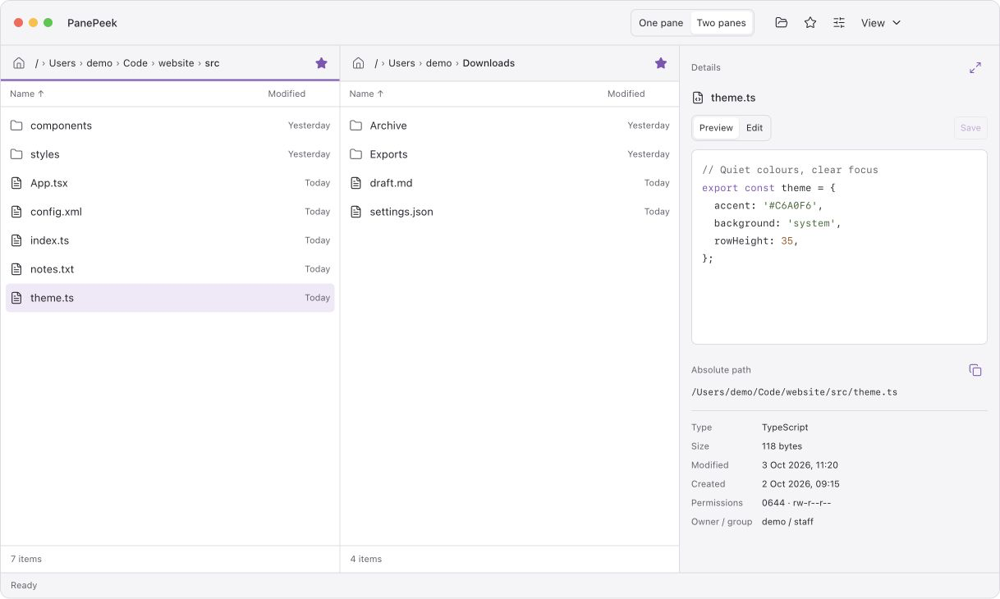
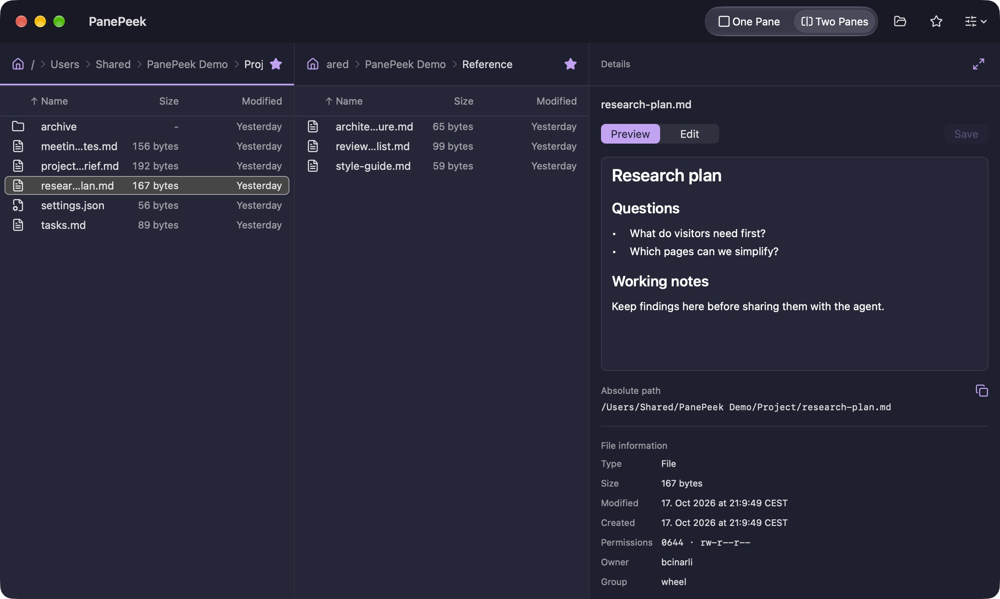
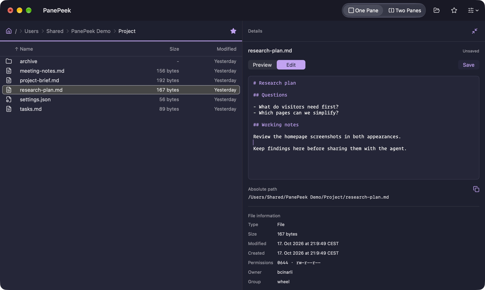
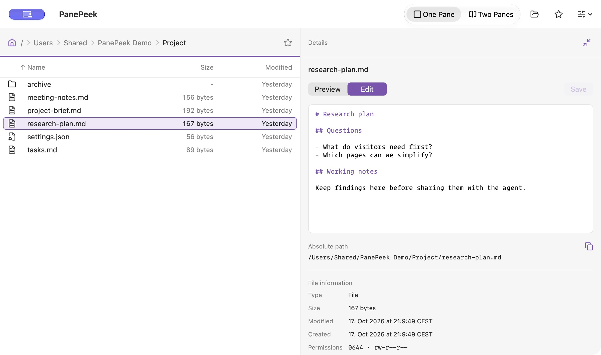

Choose one or two panes.
Use one pane for a single folder, or open a second pane alongside it. Each pane keeps its folder when you switch views.
File browser and text editor for Mac
Browse your documents and edit text files in the same window. Make changes in PanePeek without opening a separate editor.
For macOS 26 and later.


Edit in place
Select a text file and choose Edit in Details. Make your changes beside the folder list, then choose Save to keep them in the file.
Update a Markdown note or a settings file, with syntax highlighting for supported formats. You can also preview images and video as you browse.


Folder browsing
Open a second folder when you need to copy or move files between them.
Use one pane for a single folder, or open a second pane alongside it. Each pane keeps its folder when you switch views.
Save folders as favourites and open them in either pane. Click a folder in the path at the top to return to it.
Questions about PanePeek
PanePeek runs on macOS 26 and later.
Yes. You can drag files between PanePeek and Finder and use either app to browse your folders.
Details shows previews for supported text and images. It also plays local video. You can edit supported UTF-8 text files up to 1 MiB, with colour highlighting for common code and settings files. Press Space to open macOS Quick Look.